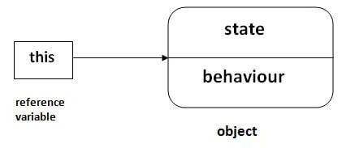

| |
.png)
 Home
Home Interview Questions
Interview Questions SQL
SQL Python
Python JavaScript
JavaScript C
C DBMS
DBMS HTML
HTML C#
C# Java 2 Interview
Exception & String
Multithreading
Collections Interview
JDBC Interview
Servlet Interview
JSP Interview
EJB Interview
Struts Interview
Hibernate Interview
Spring Interview
Spring Boot Interview
Spring MVC Interview
JPA Interview
Maven Interview
JUnit Interview
JSF Interview
PrimeFaces Interview
RichFaces Interview
GWT Interview
JDB Interview
JOGL Interview
jBPM Interview
Jenkins Interview
Java Constructor Interview
Technical Architect Interview
Array Interview Questions
Java 2 Interview
Exception & String
Multithreading
Collections Interview
JDBC Interview
Servlet Interview
JSP Interview
EJB Interview
Struts Interview
Hibernate Interview
Spring Interview
Spring Boot Interview
Spring MVC Interview
JPA Interview
Maven Interview
JUnit Interview
JSF Interview
PrimeFaces Interview
RichFaces Interview
GWT Interview
JDB Interview
JOGL Interview
jBPM Interview
Jenkins Interview
Java Constructor Interview
Technical Architect Interview
Array Interview Questions

|
|
|
300 Core Java Interview Questions | Set 190% assurance of interview questionsThere is the list of 300 core Java interview questions. If there is any core Java interview question that has been asked to you, kindly post it in the ask question section. We assure that you will get here the 90% frequently asked interview questions and answers. The answers to the Core Java interview questions are short and to the point. The core Java interview questions are categorized in Basics of Java interview questions, OOPs interview questions, String Handling interview questions, Multithreading interview questions, collection interview questions, JDBC interview questions, etc. Core Java: Basics of Java Interview Questions1) What is Java?Java is the high-level, object-oriented, robust, secure programming language, platform-independent, high performance, Multithreaded, and portable programming language. It was developed by James Gosling in June 1991. It can also be known as the platform as it provides its own JRE and API. 2) What are the differences between C++ and Java?The differences between C++ and Java are given in the following table.
3) List the features of Java Programming language.There are the following features in Java Programming Language.
4) What do you understand by Java virtual machine?Java Virtual Machine is a virtual machine that enables the computer to run the Java program. JVM acts like a run-time engine which calls the main method present in the Java code. JVM is the specification which must be implemented in the computer system. The Java code is compiled by JVM to be a Bytecode which is machine independent and close to the native code. 5) What is the difference between JDK, JRE, and JVM?JVMJVM is an acronym for Java Virtual Machine; it is an abstract machine which provides the runtime environment in which Java bytecode can be executed. It is a specification which specifies the working of Java Virtual Machine. Its implementation has been provided by Oracle and other companies. Its implementation is known as JRE. JVMs are available for many hardware and software platforms (so JVM is platform dependent). It is a runtime instance which is created when we run the Java class. There are three notions of the JVM: specification, implementation, and instance. JREJRE stands for Java Runtime Environment. It is the implementation of JVM. The Java Runtime Environment is a set of software tools which are used for developing Java applications. It is used to provide the runtime environment. It is the implementation of JVM. It physically exists. It contains a set of libraries + other files that JVM uses at runtime. JDKJDK is an acronym for Java Development Kit. It is a software development environment which is used to develop Java applications and applets. It physically exists. It contains JRE + development tools. JDK is an implementation of any one of the below given Java Platforms released by Oracle Corporation:
6) How many types of memory areas are allocated by JVM?Many types:
7) What is JIT compiler?Just-In-Time(JIT) compiler: It is used to improve the performance. JIT compiles parts of the bytecode that have similar functionality at the same time, and hence reduces the amount of time needed for compilation. Here the term “compiler” refers to a translator from the instruction set of a Java virtual machine (JVM) to the instruction set of a specific CPU. 8) What is the platform?A platform is the hardware or software environment in which a piece of software is executed. There are two types of platforms, software-based and hardware-based. Java provides the software-based platform. 9) What are the main differences between the Java platform and other platforms?There are the following differences between the Java platform and other platforms.
10) What gives Java its 'write once and run anywhere' nature?The bytecode. Java compiler converts the Java programs into the class file (Byte Code) which is the intermediate language between source code and machine code. This bytecode is not platform specific and can be executed on any computer. 11) What is classloader?Classloader is a subsystem of JVM which is used to load class files. Whenever we run the java program, it is loaded first by the classloader. There are three built-in classloaders in Java.
12) Is Empty .java file name a valid source file name?Yes, Java allows to save our java file by .java only, we need to compile it by javac .java and run by java classname Let's take a simple example:
compile it by javac .java run it by java A 13) Is delete, next, main, exit or null keyword in java?No. 14) If I don't provide any arguments on the command line, then what will the value stored in the String array passed into the main() method, empty or NULL?It is empty, but not null. 15) What if I write static public void instead of public static void?The program compiles and runs correctly because the order of specifiers doesn't matter in Java. 16) What is the default value of the local variables?The local variables are not initialized to any default value, neither primitives nor object references. 17) What are the various access specifiers in Java?In Java, access specifiers are the keywords which are used to define the access scope of the method, class, or a variable. In Java, there are four access specifiers given below.
18) What is the purpose of static methods and variables?The methods or variables defined as static are shared among all the objects of the class. The static is the part of the class and not of the object. The static variables are stored in the class area, and we do not need to create the object to access such variables. Therefore, static is used in the case, where we need to define variables or methods which are common to all the objects of the class. For example, In the class simulating the collection of the students in a college, the name of the college is the common attribute to all the students. Therefore, the college name will be defined as static. 19) What are the advantages of Packages in Java?There are various advantages of defining packages in Java.
20) What is the output of the following Java program?
The output of the above code will be 30Javatpoint Javatpoint1020 Explanation In the first case, 10 and 20 are treated as numbers and added to be 30. Now, their sum 30 is treated as the string and concatenated with the string Javatpoint. Therefore, the output will be 30Javatpoint. In the second case, the string Javatpoint is concatenated with 10 to be the string Javatpoint10 which will then be concatenated with 20 to be Javatpoint1020. 21) What is the output of the following Java program?
The output of the above code will be 200Javatpoint Javatpoint200 Explanation In the first case, The numbers 10 and 20 will be multiplied first and then the result 200 is treated as the string and concatenated with the string Javatpoint to produce the output 200Javatpoint. In the second case, The numbers 10 and 20 will be multiplied first to be 200 because the precedence of the multiplication is higher than addition. The result 200 will be treated as the string and concatenated with the string Javatpointto produce the output as Javatpoint200. 22) What is the output of the following Java program?
The above code will give the compile-time error because the for loop demands a boolean value in the second part and we are providing an integer value, i.e., 0. Core Java - OOPs Concepts: Initial OOPs Interview QuestionsThere is given more than 50 OOPs (Object-Oriented Programming and System) interview questions. However, they have been categorized in many sections such as constructor interview questions, static interview questions, Inheritance Interview questions, Abstraction interview question, Polymorphism interview questions, etc. for better understanding. 23) What is object-oriented paradigm?It is a programming paradigm based on objects having data and methods defined in the class to which it belongs. Object-oriented paradigm aims to incorporate the advantages of modularity and reusability. Objects are the instances of classes which interacts with one another to design applications and programs. There are the following features of the object-oriented paradigm.
24) What is an object?The Object is the real-time entity having some state and behavior. In Java, Object is an instance of the class having the instance variables as the state of the object and the methods as the behavior of the object. The object of a class can be created by using the new keyword. 25) What is the difference between an object-oriented programming language and object-based programming language?There are the following basic differences between the object-oriented language and object-based language.
26) What will be the initial value of an object reference which is defined as an instance variable?All object references are initialized to null in Java. Core Java - OOPs Concepts: Constructor Interview Questions27) What is the constructor?The constructor can be defined as the special type of method that is used to initialize the state of an object. It is invoked when the class is instantiated, and the memory is allocated for the object. Every time, an object is created using the new keyword, the default constructor of the class is called. The name of the constructor must be similar to the class name. The constructor must not have an explicit return type. More Details.28) How many types of constructors are used in Java?Based on the parameters passed in the constructors, there are two types of constructors in Java.
29) What is the purpose of a default constructor?The purpose of the default constructor is to assign the default value to the objects. The java compiler creates a default constructor implicitly if there is no constructor in the class.
Output: 0 null 0 null Explanation: In the above class, you are not creating any constructor, so compiler provides you a default constructor. Here 0 and null values are provided by default constructor.  More Details. 30) Does constructor return any value?Ans: yes, The constructor implicitly returns the current instance of the class (You can't use an explicit return type with the constructor). More Details. 31)Is constructor inherited?No, The constructor is not inherited. 32) Can you make a constructor final?No, the constructor can't be final. 33) Can we overload the constructors?Yes, the constructors can be overloaded by changing the number of arguments accepted by the constructor or by changing the data type of the parameters. Consider the following example.
In the above program, The constructor Test is overloaded with another constructor. In the first call to the constructor, The constructor with one argument is called, and i will be initialized with the value 10. However, In the second call to the constructor, The constructor with the 2 arguments is called, and i will be initialized with the value 15. 34) What do you understand by copy constructor in Java?There is no copy constructor in java. However, we can copy the values from one object to another like copy constructor in C++. There are many ways to copy the values of one object into another in java. They are:
In this example, we are going to copy the values of one object into another using java constructor.
Output: 111 Karan 111 Karan 35) What are the differences between the constructors and methods?There are many differences between constructors and methods. They are given below.

36) What is the output of the following Java program?
The output of the following program is: a = 10 b = 15 Here, the data type of the variables a and b, i.e., byte gets promoted to int, and the first parameterized constructor with the two integer parameters is called. 37) What is the output of the following Java program?
The output of the program is 0 because the variable i is initialized to 0 internally. As we know that a default constructor is invoked implicitly if there is no constructor in the class, the variable i is initialized to 0 since there is no constructor in the class. 38) What is the output of the following Java program?
There is a compiler error in the program because there is a call to the default constructor in the main method which is not present in the class. However, there is only one parameterized constructor in the class Test. Therefore, no default constructor is invoked by the constructor implicitly. Core Java - OOPs Concepts: static keyword Interview Questions39) What is the static variable?The static variable is used to refer to the common property of all objects (that is not unique for each object), e.g., The company name of employees, college name of students, etc. Static variable gets memory only once in the class area at the time of class loading. Using a static variable makes your program more memory efficient (it saves memory). Static variable belongs to the class rather than the object.
Output:111 Karan ITS
222 Aryan ITS
More Details. 40) What is the static method?
41) What are the restrictions that are applied to the Java static methods?Two main restrictions are applied to the static methods.
42) Why is the main method static?Because the object is not required to call the static method. If we make the main method non-static, JVM will have to create its object first and then call main() method which will lead to the extra memory allocation. More Details. 43) Can we override the static methods?No, we can't override static methods. 44) What is the static block?Static block is used to initialize the static data member. It is executed before the main method, at the time of classloading.
Output: static block is invoked
Hello main
More Details. 45) Can we execute a program without main() method?Ans) No, It was possible before JDK 1.7 using the static block. Since JDK 1.7, it is not possible. More Details. 46) What if the static modifier is removed from the signature of the main method?Program compiles. However, at runtime, It throws an error "NoSuchMethodError." 47) What is the difference between static (class) method and instance method?
48) Can we make constructors static?As we know that the static context (method, block, or variable) belongs to the class, not the object. Since Constructors are invoked only when the object is created, there is no sense to make the constructors static. However, if you try to do so, the compiler will show the compiler error. 49) Can we make the abstract methods static in Java?In Java, if we make the abstract methods static, It will become the part of the class, and we can directly call it which is unnecessary. Calling an undefined method is completely useless therefore it is not allowed. 50) Can we declare the static variables and methods in an abstract class?Yes, we can declare static variables and methods in an abstract method. As we know that there is no requirement to make the object to access the static context, therefore, we can access the static context declared inside the abstract class by using the name of the abstract class. Consider the following example.
Output hi !! I am good !! i = 102 Core Java - OOPs Concepts: Inheritance Interview Questions51) What is this keyword in java?The this keyword is a reference variable that refers to the current object. There are the various uses of this keyword in Java. It can be used to refer to current class properties such as instance methods, variable, constructors, etc. It can also be passed as an argument into the methods or constructors. It can also be returned from the method as the current class instance. More Details. 52) What are the main uses of this keyword?There are the following uses of this keyword.
53) Can we assign the reference to this variable?No, this cannot be assigned to any value because it always points to the current class object and this is the final reference in Java. However, if we try to do so, the compiler error will be shown. Consider the following example.
Output Test.java:5: error: cannot assign a value to final variable this
this = null;
^
1 error
54) Can this keyword be used to refer static members?Yes, It is possible to use this keyword to refer static members because this is just a reference variable which refers to the current class object. However, as we know that, it is unnecessary to access static variables through objects, therefore, it is not the best practice to use this to refer static members. Consider the following example.
Output 10 55) How can constructor chaining be done using this keyword?Constructor chaining enables us to call one constructor from another constructor of the class with respect to the current class object. We can use this keyword to perform constructor chaining within the same class. Consider the following example which illustrates how can we use this keyword to achieve constructor chaining.
Output ID: 105 Name:Vikas age:22 address: Delhi 56) What are the advantages of passing this into a method instead of the current class object itself?As we know, that this refers to the current class object, therefore, it must be similar to the current class object. However, there can be two main advantages of passing this into a method instead of the current class object.
57) What is the Inheritance?Inheritance is a mechanism by which one object acquires all the properties and behavior of another object of another class. It is used for Code Reusability and Method Overriding. The idea behind inheritance in Java is that you can create new classes that are built upon existing classes. When you inherit from an existing class, you can reuse methods and fields of the parent class. Moreover, you can add new methods and fields in your current class also. Inheritance represents the IS-A relationship which is also known as a parent-child relationship. There are five types of inheritance in Java.
Multiple inheritance is not supported in Java through class. More Details.58) Why is Inheritance used in Java?There are various advantages of using inheritance in Java that is given below.
59) Which class is the superclass for all the classes?The object class is the superclass of all other classes in Java. 60) Why is multiple inheritance not supported in java?To reduce the complexity and simplify the language, multiple inheritance is not supported in java. Consider a scenario where A, B, and C are three classes. The C class inherits A and B classes. If A and B classes have the same method and you call it from child class object, there will be ambiguity to call the method of A or B class. Since the compile-time errors are better than runtime errors, Java renders compile-time error if you inherit 2 classes. So whether you have the same method or different, there will be a compile time error.
Compile Time Error 61) What is aggregation?Aggregation can be defined as the relationship between two classes where the aggregate class contains a reference to the class it owns. Aggregation is best described as a has-a relationship. For example, The aggregate class Employee having various fields such as age, name, and salary also contains an object of Address class having various fields such as Address-Line 1, City, State, and pin-code. In other words, we can say that Employee (class) has an object of Address class. Consider the following example. Address.java
Employee.java
Output 111 varun gzb UP india 112 arun gno UP india 62) What is composition?Holding the reference of a class within some other class is known as composition. When an object contains the other object, if the contained object cannot exist without the existence of container object, then it is called composition. In other words, we can say that composition is the particular case of aggregation which represents a stronger relationship between two objects. Example: A class contains students. A student cannot exist without a class. There exists composition between class and students. 63) What is the difference between aggregation and composition?Aggregation represents the weak relationship whereas composition represents the strong relationship. For example, the bike has an indicator (aggregation), but the bike has an engine (composition). 64) Why does Java not support pointers?The pointer is a variable that refers to the memory address. They are not used in Java because they are unsafe(unsecured) and complex to understand. 65) What is super in java?The super keyword in Java is a reference variable that is used to refer to the immediate parent class object. Whenever you create the instance of the subclass, an instance of the parent class is created implicitly which is referred by super reference variable. The super() is called in the class constructor implicitly by the compiler if there is no super or this.
Output: animal is created dog is created 66) How can constructor chaining be done by using the super keyword?
Output Name: Mukesh Salary: 90000.0 Age: 22 Address: Delhi 67) What are the main uses of the super keyword?There are the following uses of super keyword.
68) What are the differences between this and super keyword?There are the following differences between this and super keyword.
69) What is the output of the following Java program?
Output Person class constructor called Employee class constructor called Explanation The super() is implicitly invoked by the compiler if no super() or this() is included explicitly within the derived class constructor. Therefore, in this case, The Person class constructor is called first and then the Employee class constructor is called. 70) Can you use this() and super() both in a constructor?No, because this() and super() must be the first statement in the class constructor. Example:
Output: Test.java:5: error: call to this must be first statement in constructor 71)What is object cloning?The object cloning is used to create the exact copy of an object. The clone() method of the Object class is used to clone an object. The java.lang.Cloneable interface must be implemented by the class whose object clone we want to create. If we don't implement Cloneable interface, clone() method generates CloneNotSupportedException.
Core Java - OOPs Concepts: Method Overloading Interview Questions72) What is method overloading?Method overloading is the polymorphism technique which allows us to create multiple methods with the same name but different signature. We can achieve method overloading in two ways.
Method overloading increases the readability of the program. Method overloading is performed to figure out the program quickly. More Details.73) Why is method overloading not possible by changing the return type in java?In Java, method overloading is not possible by changing the return type of the program due to avoid the ambiguity.
Output: Compile Time Error: method add(int, int) is already defined in class Adder 74) Can we overload the methods by making them static?No, We cannot overload the methods by just applying the static keyword to them(number of parameters and types are the same). Consider the following example.
Output Animal.java:7: error: method consume(int) is already defined in class Animal
static void consume(int a)
^
Animal.java:15: error: non-static method consume(int) cannot be referenced from a static context
Animal.consume(20);
^
2 errors
75) Can we overload the main() method?Yes, we can have any number of main methods in a Java program by using method overloading. More Details.76) What is method overloading with type promotion?By Type promotion is method overloading, we mean that one data type can be promoted to another implicitly if no exact matching is found. 
As displayed in the above diagram, the byte can be promoted to short, int, long, float or double. The short datatype can be promoted to int, long, float or double. The char datatype can be promoted to int, long, float or double and so on. Consider the following example.
Output 40 60 77) What is the output of the following Java program?
Output OverloadingCalculation3.java:7: error: reference to sum is ambiguous
obj.sum(20,20);//now ambiguity
^
both method sum(int,long) in OverloadingCalculation3
and method sum(long,int) in OverloadingCalculation3 match
1 error
Explanation There are two methods defined with the same name, i.e., sum. The first method accepts the integer and long type whereas the second method accepts long and the integer type. The parameter passed that are a = 20, b = 20. We can not tell that which method will be called as there is no clear differentiation mentioned between integer literal and long literal. This is the case of ambiguity. Therefore, the compiler will throw an error. Core Java - OOPs Concepts: Method Overriding Interview Questions78) What is method overriding:If a subclass provides a specific implementation of a method that is already provided by its parent class, it is known as Method Overriding. It is used for runtime polymorphism and to implement the interface methods. Rules for Method overriding
79) Can we override the static method?No, you can't override the static method because they are the part of the class, not the object. 80) Why can we not override static method?It is because the static method is the part of the class, and it is bound with class whereas instance method is bound with the object, and static gets memory in class area, and instance gets memory in a heap. 81) Can we override the overloaded method?Yes. 82) Difference between method Overloading and Overriding.
83) Can we override the private methods?No, we cannot override the private methods because the scope of private methods is limited to the class and we cannot access them outside of the class. 84) Can we change the scope of the overridden method in the subclass?Yes, we can change the scope of the overridden method in the subclass. However, we must notice that we cannot decrease the accessibility of the method. The following point must be taken care of while changing the accessibility of the method.
85) Can we modify the throws clause of the superclass method while overriding it in the subclass?Yes, we can modify the throws clause of the superclass method while overriding it in the subclass. However, there are some rules which are to be followed while overriding in case of exception handling.
86) What is the output of the following Java program?
Output Base class method called with integer a = 10 Explanation The method() is overloaded in class Base whereas it is derived in class Derived with the double type as the parameter. In the method call, the integer is passed. 87) Can you have virtual functions in Java?Yes, all functions in Java are virtual by default. 88) What is covariant return type?Now, since java5, it is possible to override any method by changing the return type if the return type of the subclass overriding method is subclass type. It is known as covariant return type. The covariant return type specifies that the return type may vary in the same direction as the subclass.
Output: welcome to covariant return type 89) What is the output of the following Java program?
Output Derived method called ... Explanation The method of Base class, i.e., baseMethod() is overridden in Derived class. In Test class, the reference variable b (of type Base class) refers to the instance of the Derived class. Here, Runtime polymorphism is achieved between class Base and Derived. At compile time, the presence of method baseMethod checked in Base class, If it presence then the program compiled otherwise the compiler error will be shown. In this case, baseMethod is present in Base class; therefore, it is compiled successfully. However, at runtime, It checks whether the baseMethod has been overridden by Derived class, if so then the Derived class method is called otherwise Base class method is called. In this case, the Derived class overrides the baseMethod; therefore, the Derived class method is called. Core Java - OOPs Concepts: final keyword Interview Questions90) What is the final variable?In Java, the final variable is used to restrict the user from updating it. If we initialize the final variable, we can't change its value. In other words, we can say that the final variable once assigned to a value, can never be changed after that. The final variable which is not assigned to any value can only be assigned through the class constructor. 
Output:Compile Time Error 91) What is the final method?If we change any method to a final method, we can't override it. More Details.
Output:Compile Time Error 92) What is the final class?If we make any class final, we can't inherit it into any of the subclasses.
Output:Compile Time Error 93) What is the final blank variable?A final variable, not initialized at the time of declaration, is known as the final blank variable. We can't initialize the final blank variable directly. Instead, we have to initialize it by using the class constructor. It is useful in the case when the user has some data which must not be changed by others, for example, PAN Number. Consider the following example:
94) Can we initialize the final blank variable?Yes, if it is not static, we can initialize it in the constructor. If it is static blank final variable, it can be initialized only in the static block. More Details. 95) Can you declare the main method as final?Yes, We can declare the main method as public static final void main(String[] args){}. 96) What is the output of the following Java program?
Output 20 Explanation Since i is the blank final variable. It can be initialized only once. We have initialized it to 20. Therefore, 20 will be printed. 97) What is the output of the following Java program?
Output Derived.java:11: error: getInfo() in Derived cannot override getInfo() in Base
protected final void getInfo()
^
overridden method is final
1 error
Explanation The getDetails() method is final; therefore it can not be overridden in the subclass. 98) Can we declare a constructor as final?The constructor can never be declared as final because it is never inherited. Constructors are not ordinary methods; therefore, there is no sense to declare constructors as final. However, if you try to do so, The compiler will throw an error. 99) Can we declare an interface as final?No, we cannot declare an interface as final because the interface must be implemented by some class to provide its definition. Therefore, there is no sense to make an interface final. However, if you try to do so, the compiler will show an error. 100) What is the difference between the final method and abstract method?The main difference between the final method and abstract method is that the abstract method cannot be final as we need to override them in the subclass to give its definition.
Next TopicJava interview Questions part 2
|
You may also like:
- Java Interview Questions
- SQL Interview Questions
- Python Interview Questions
- JavaScript Interview Questions
- Angular Interview Questions
- Selenium Interview Questions
- Spring Boot Interview Questions
- HR Interview Questions
- C Programming Interview Questions
- C++ Interview Questions
- Data Structure Interview Questions
- DBMS Interview Questions
- HTML Interview Questions
- IAS Interview Questions
- Manual Testing Interview Questions
- OOPs Interview Questions
- .Net Interview Questions
- C# Interview Questions
- ReactJS Interview Questions
- Networking Interview Questions
- PHP Interview Questions
- CSS Interview Questions
- Node.js Interview Questions
- Spring Interview Questions
- Hibernate Interview Questions
- AWS Interview Questions
- Accounting Interview Questions
Javatpoint Services
JavaTpoint offers too many high quality services. Mail us on hr@javatpoint.com, to get more information about given services.
- Website Designing
- Website Development
- Java Development
- PHP Development
- WordPress
- Graphic Designing
- Logo
- Digital Marketing
- On Page and Off Page SEO
- PPC
- Content Development
- Corporate Training
- Classroom and Online Training
- Data Entry
Training For College Campus
JavaTpoint offers college campus training on Core Java, Advance Java, .Net, Android, Hadoop, PHP, Web Technology and Python. Please mail your requirement at hr@javatpoint.com.
Duration: 1 week to 2 week